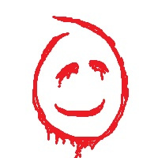

Про себе
Мене звати Владислав, мені 19 років. Я навчаюся на третьому курсі Полтавського політехнічного університету імені Юрія Кондратюка на безоплатній формі навчання. З дитинства мене цікавив комп’ютерний світ, тож я вирішив пов’язати своє життя з ІТ-сферою. Мене приваблює можливість створювати щось нове власними руками — від вебсайтів до цілих цифрових проєктів.
Я постійно розвиваюся, навчаючись не лише в університеті, а й самостійно. Проходив курси з веброзробки, зокрема “Basics of Web Development” від EDERA та CS50x від Гарварду, а також навчався в онлайн-школі OKTEN. Мені подобається занурюватися в нові технології, читати фахову літературу, як-от “HTML and CSS: Design and Build Websites” Джона Дакетта, і дивитися навчальні відео, щоб вдосконалювати свої навички.
Моє хобі
Моє головне хобі — це програмування, особливо фронтенд-розробка. Мені подобається процес створення красивих, зручних і продуманих інтерфейсів. Я отримую задоволення, коли бачу, як рядки коду перетворюються на реальний, живий сайт. Крім того, я люблю експериментувати з дизайном і шукати нові ідеї для власних проєктів.
Програмування
body{
margin: 0;
background-color: beige;
color: black;
}
У вільний час я також цікавлюся філософією, відеоіграми й аніме — вони допомагають мені розвивати уяву й мислення. Часто спілкуюся з близькими людьми про глибокі теми, розмірковую про життя, цінності та майбутнє. Усе це допомагає мені краще розуміти себе і світ навколо, що, своєю чергою, надихає мене створювати щось нове та значуще.